Indianapolis Scottish Rite Cathedral
Undated · Indianapolis, Indiana
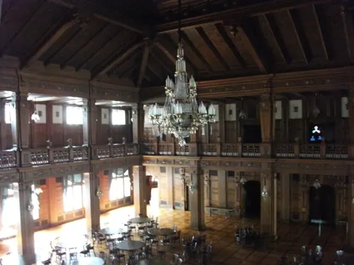
An undated visit to the Indianapolis Scottish Rite Cathedral (separate from the Grand Lodge of Indiana stop already on this site).
The album is architecture and museum cases — stained glass, the ballroom balcony, corridors, and display rooms. Faces in the glass are artwork, not a live crowd.


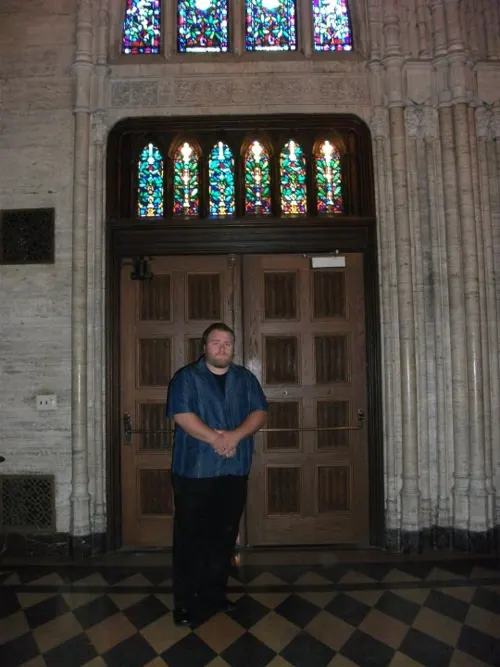

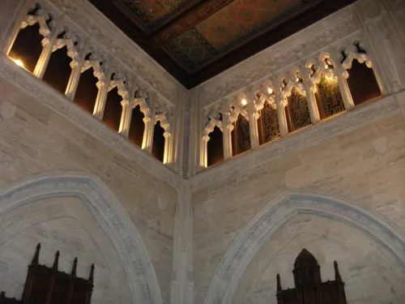

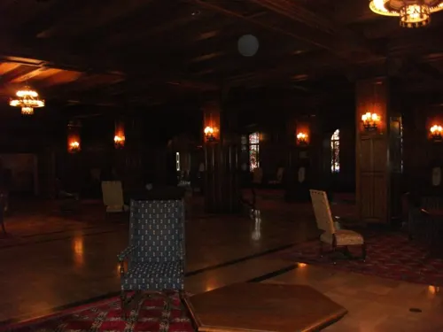

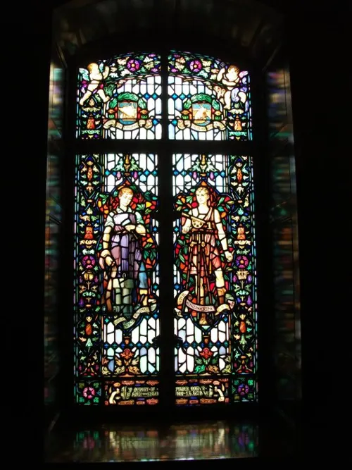

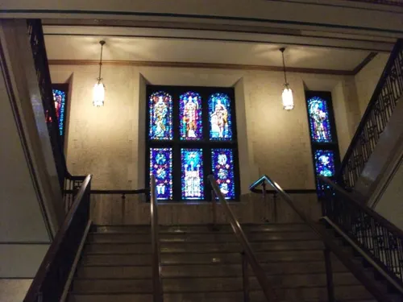

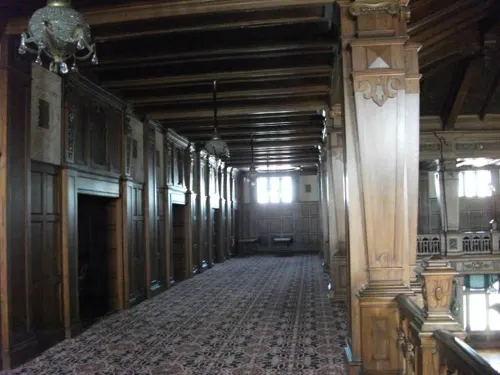

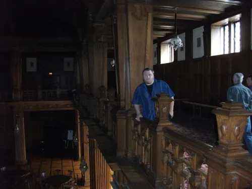

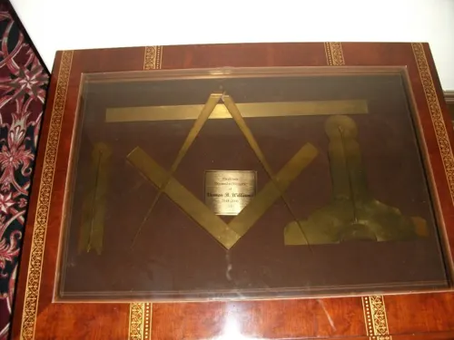

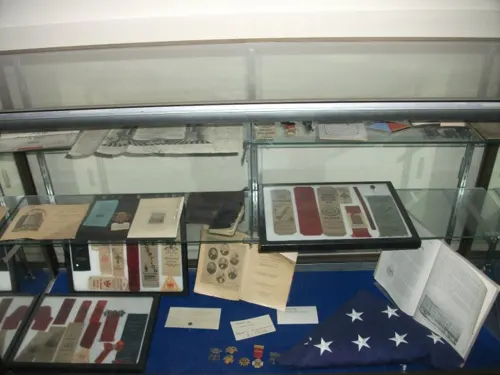

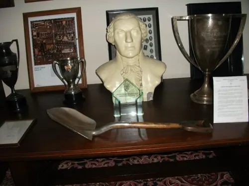

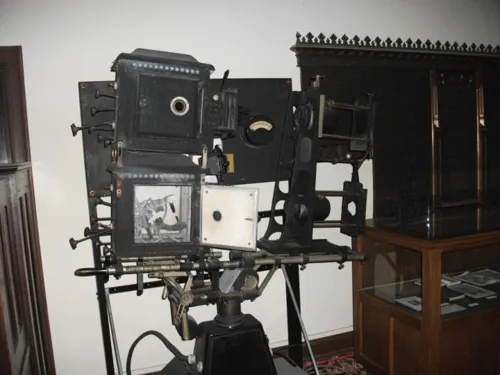

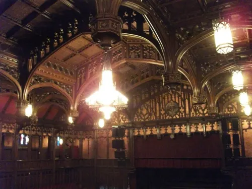

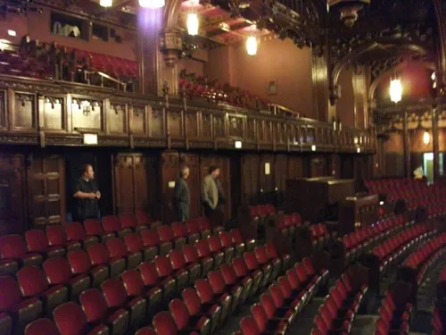